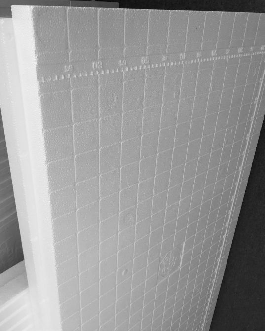
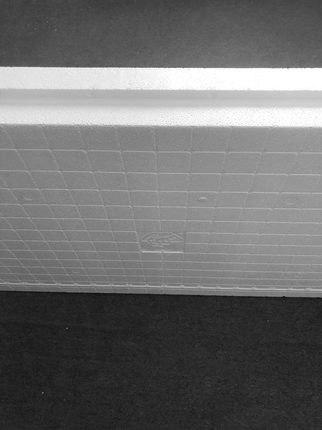

Возведение стен осуществляется горизонтальным соединением блоков путем наложения их друг на друга с легким нажимом на кромки блока, чтобы замки, которые находятся в верхней и нижней части кромок плотно соединились. Укладку пенополистирольных элементов начинают или на горизонтальном фундаменте, или на забетонированном перекрытии предыдущего этажа. Горизонтальную изоляцию на фундаменте можно выполнить из двухслойного рубероида на мастике или полиэтиленовой пленке. В сейсмических районах на бетонную подготовку (толщина бетонной подготовки должна быть задана по проекту).
Первый слой пенополистирольных блоков укладывают непосредственно на изоляцию горизонтального фундамента (в сейсмических районах на бетонную подготовку). Во время кладки первого слоя формируется архитектура целого этажа, поэтому важно не только четко и правильно укладывать блоки, но и по назначению использовать все заглушки (при отсутствии блоков с торцом или заводских заглушек, заглушки можно вырезать из рядового блока 25МНОС).
Второй слой блоков должен перекрывать вертикальные швы первого слоя по принципу кирпичной кладки (с перевязкой), что позволяет жестко фиксировать форму строения.
Третий слой - контрольный для выравнивания слоев блоков по вертикальным швам кладки. После сверки с проектом размеров стен и их осевой точности, следует заглушить с помощью (вырезанных) или готовых заглушек все боковые отверстия в блоках (при отсутствии торцевых блоков), образовавшиеся в местах их соединения на угловых стенных и проемах дверей, окон. Теперь можно приступить к укладке арматуры и бетонированию первых двух слоев блоков, затем следующих и т.д.
При индивидуальном строительстве лучше осуществлять бетонирование по два-три слоя блоков бетоном (или бетонной массой), приготовленном непосредственно на стройплощадке. Марка бетона должна соответствовать проекту. В процессе бетонирования двух слоев пенополистирольных блоков верхний край стены должен состоять из слоя, не заполняемых в этом цикле блоков, которые выполняют роль стяжки бетонных слоев.
Верхнюю кромку этого ряда блоков следует защитить, чтобы в замки не попала бетонная масса (например загнутым листом кровельной стали, так называемой воронкой или готовым корректором). Корректоры можно использовать многократно. При процессе бетонирования необходимо постоянно контролировать вертикальность стен и положение верхней кромки по отношению к оси.
При строительстве многоэтажного дома пенополистирольные блоки, удобно заполнять бетонной массой при помощи бетононасоса, регулируя расход бетона так, чтобы не превышать объема 10-15 м³/час (если консистенция массы пластична!). Струю бетона сначала надо направлять на углы постройки и края отверстий, а уже потом на среднюю часть полости стены. Для уплотнения бетонной массы следует применять небольшие (игольчатые) вибраторы или метод штыкования.
В случае бетонирования стены слоями каждый последующий слой должен укладываться не позднее чем через 6 часов, после закладки предыдущего. В противном случае, для прочного соединения слоев нужно удалить с поверхности затвердевшего бетона, слой остекленевшего цементного молочка, затем поверхность очистить и увлажнить перед укладкой следующего слоя. Кроме того, для обеспечения требуемой прочности стены, возводимой слоями не следует разглаживать поверхности очередных слоев бетона.
Особого внимания требует оформление стыков внешних и внутренних несущих стен, а также углов постройки. Для этого необходимо вырезать фрагменты в боковых стенках одних блоков МНОС и в торцевой части других так, чтобы сохранить их горизонтальность, армировать и залить бетоном. Боковые, отходящие от основных стен несущие фрагменты соединяют с бетоном основных стен при помощи стальной арматуры.
Поскольку герметичная пенополистирольная опалубка ограничивает отвод лишней воды, нужно контролировать ее содержимое в бетонной смеси. При необходимости вязкую, но пластичную консистенцию бетона можно облегчить, добавляя к нему пластификаторы. Если Вы предполагаете строить по технологии стены подвала или погреба, необходимо защитить их от бокового давления грунта.
Подробности по этому вопросу должен включить технический проект строения. Внешнюю гидроизоляцию стен погребов и подвалов обычно осуществляют традиционным способом, как и при выполнении кладки стены из кирпича.
Толщина стены - 25 см (из них 10 см - пенополистирол, 15 см - бетон) в сериях 30МНОС стена - 30 см (из них 15 см - пенополистирол, 15 см - бетон).
Вес стен без штукатурки внешней и внутренней - 280-300 кг/м² .
Расход бетона - около 100 л/м² стены.
Приведенный коэффициент теплопередачи стен α = 0,039-0,041 Вт/м²*С.
Предел огнестойкости стены - 2,5 часа.
Паропроницаемость 4/100 по DIN 9108.
Отсутствие конденсации в стене при правильном конструктивном решении и эксплуатации.
Акустическая изоляция - 46 дб.
Допуск для объектов высотой до 15 м (Заключение КазНИИССА).


1. Подготовка стены Очистите стену от наплывов бетона, раствора и пыли. Прогрунтуйте её грунтовкой, это воспрепятствует впитыванию основанием, влаги из клея. Перед продолжением работ, дайте грунтовке высохнуть. Большие перепады и углубления на стене, выровняйте клеем или цементно-песчаным раствором.
2. Цокольная планка Сделайте разметку и отбейте шнуром высоту, на которой будет укреплена цокольная планка. Укрепите планку к стене дюбелями в количестве 3 штук на 1 метр длины. Контролируйте горизонтальность планки уровнем. Крепление цокольной перфорированной планки необходимо, для установки нижнего ряда пенополистирольных плит и защиты нижней кромки плиты от насекомых и грызунов. Цокольная планка должна быть подобрана по размеру пенополистирольных плит.
3. Установка и крепление пенополистирольных плит Пенополистирольные плиты крепят к основанию стен клеем и тарельчатыми дюбелями. Размещайте клей, в строго определённом количестве воды, с помощью электродрели и смесительной насадки до достижения однородной и пластичной массы. Проводите процедуру с точным соответствием с инструкцией. Для установки пенополистирольных плит на стену, нанесите клей полосой по периметру плиты на расстоянии 2-3 см от края и две или три поперечные вертикальные полосы по короткой стороне плиты. Размеры промазанных участков, не должны превышать более 10 см. Плиты устанавливаются длинной кромкой на цокольную планку и плотно прижимаются к стене. Необходимо контролировать горизонтальную и вертикальную поверхность плит уровнем. Установка плит начинается от нижнего угла здания. При установке последующих рядов, соблюдайте перевязку швов, углов и перекрытие стыков (т.е. система кирпичной кладки). При установке плит над окнами и дверными проёмами, необходимо избегать швов над верхними и нижними углами проёмов. Резка плит осуществляется ножовкой по дереву или длинными острым ножом. В местах соединения плит с другими частями строения, такие как дерево, пластик и железо, во избежание деформационных разрывов и трещин, закладывается комбинированная уплотнительная лента. Швы и стыки между плитами, расстояние которых более чем 1 см шириной, заполняется монтажной пеной. После засыхания клеевого раствора, минимум 1 день, проконтролируйте вертикальную и горизонтальную поверхность плит, для получения ровной поверхности отшлифуйте выступающие углы, обрежьте остатки монтажной пены. Укрепление плит тарельчатыми дюбелями зависит от состояния основания стены. Для новых зданий и строений от 2 до 4 штук на кв. метр, для старых зданий и сооружений от 6 до 8 штук на кв. метр. Просверлите отверстие через плиту в основание стены, так чтобы длина отверстия была немного длиннее длины тарельчатого дюбеля. Минимальное углубление дюбеля в основание стены (бетон, кирпич и т.д.) 25 мм. Вставьте тарельчатое основание дюбеля в отверстие и забейте в него стержень, выравнивая дюбель с поверхностью плиты.
4. Установка оконного и углового профиля с сеткой Наклейте между окном и пенополистирольной плитой, профиль оконного примыкания с сеткой, который препятствует проникновению влаги и защищает от деформации трещин, удалив клейкую ленту с обратной стороны профиля. На оконные, дверные и другие угля здания, изолированного пенополистирольными плитами, установите профиль углового примыкания с сеткой. Нанесите клей плитами, установите профиль углового примыкания и пользуясь тонким слоем на угол, наклейте профиль углового примыкания и пользуясь уровнем установите вертикальность угла. Для укрепления углов над окнами и дверными проёмами, наклейте поперек угла, куски стеклотканевой сетки размером 20х20 см, тем самым препятствуя деформационным нагрузкам на угол.
5. Нанесение клея-штукатурного слоя с армирующей стеклотканевой сеткой Размешайте клей до достижения однородной пластичной массы и нанесите на поверхность теплоизоляционной плиты слой клея шириной, равной ширине армирующей сетки. Наложите на клей армирующую сетку и разровняйте её планомерными движениями от середины в стороны, металлической тёркой. Работы можно проводить в вертикальном или горизонтальном направлении. В местах стыковки сетки, внахлест должен быть не менее 10 см. Поверх сетки нанесите и выровняйте шпателем еще один слой клея. Общая толщина нанесенного клея и армирующей сетки должна находится в пределах 5-8 мм. Армирующая сетка должна укладываться с тенденцией к наружной части штукатурного слоя. Для дополнительной защиты от механических повреждений, нижнюю часть фасада высотой до 1-1,50 м нужно усилить армирующей сеткой, накладывая стык в стык без внахлест.
6. Декоративная штукатурка Размешайте декоративную штукатурку в строго определенном количестве воды, ёмкость и вода должны быть совершенно чистыми. Добейтесь однородной массы и оставьте стоять от 10 до 15 минут. После чего размешайте еще раз, смесь будет готова к нанесению на стену. Целесообразно нанесение декоративной штукатурки в направлении сверху вниз, опускаясь по стене здания. Наносите смесь короткими дорожками до 1 м шириной металлической тёркой, движением сверху в низ, опускаясь по стене здания. Наносите смесь короткими дорожками до 1 м шириной металлической тёркой, движением снизу в верх. Не давая застыть нижней кромке нанесённого слоя, незамедлительно наносите следующую дорожку. Время засыхания нанесённого слоя от 15 до 20 минут. В процессе нанесения смеси, разровняйте и уложите круговыми движениями в верх вниз, нужную структуру предложенную заводом изготовителем. Для работ используйте пластиковую тёрку Вы должны двигаться быстро и четко, так как время застывания материала очень коротко. Помните, что в случае высыхания материала, Вы не сумеете получить необходимую структуру и внешний вид фасада.